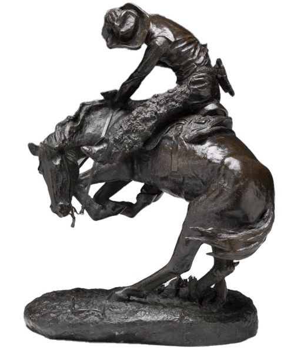

Reynolda House
A brief history...
The Reynolda House was originally built by Katherine Smith Reynolds and her husband R.J. Reynolds, the founder of R.J. Reynolds Tobacco Company. The house began construction in 1912 and finished in 1917, which was shortly before R.J. passed away from pancreatic cancer. It continued to be the home of 2 generations of the Reynolds Family. First with Katherine Smith Reynolds and her children, and then in the 30s, her eldest daughter Mary Reynolds Babcock acquired the estate. In 1965 it opened to the public as an arts and education institution and then later became an art museum in 1967. It is largely known for having one of the country's finest collections of American paintings.
PORTRAIT OF KATHERINE SMITH REYNOLDS AND MARY REYNOLDS IN 1920
I saw art in person...
The Reynolda House was one of my first experiences seeing renowned artwork in person. The museum has a large collection of work by the artist, Thomas Cole, who is known as the founder of the Hudson River School art movement.
Much of his work romanticized the American wilderness and Home in the Woods was no exception. When I think of the vast majority of work within the main house, this is the piece of art I most distinctly remembered. If memory serves correctly, It can be found in a short hallway directly off the original entrance to the house. The painting featured a scene with a small cabin house on the right side of the canvas and a lake surrounded by trees on the left. It's one of few paintings on the main level that depict figures, featuring a man walking from the lake with his collection of fish, towards a woman and a few children standing in the cabin's doorway. I always found this piece interesting due to its high level of detail and just how much praise it was always given during our tours of the house.
Another piece of art I distinctly remember is actually a small statue. From the house's main entrance and up either of the two staircases, there's two square rooms almost behind the fireplace. In the middle of the small square room (I believe it was the one on the left) was a square white pedestal with the small bronze statue, The Rattlesnake by Frederic Remington. It featured a cowboy looking figure atop a bucking horse, which had been startled by the small bronze rattlesnake to its left. I remember tours often going into great detail about the small rattlesnake featured at the bottom of the statue and the dynamic position of the horse and cowboy. Can you spot the rattlesnake?
I learned about art and made my own...
One of my earliest memories of the Reynolda House is attending their summer camps. One was all about learning about art and creating our own work. I remember only three pieces I made over the course of this camp, the first being inspired by Claude Monet. I remember that we went outside to make this piece. At the front of the house was a small garden and the camp had set up tables for us to work at. We learned about the artist Claude Monet and began to paint our own water lilies. As a final touch, we made one of the flowers three dimensional by cutting a plastic cup.
Another work I remember fondly was a star. I believe we made this work in the backyard of the house, just outside of the museum extension. The piece was made with a really thin tissue paper over a super thin wooden frame in the shape of a star. I believe we also used water color to cover the surface of the star and at the very end we added salt to create a really fun bubbling texture effect. We also added beads and feathers to the points of the star. While I remember rather clearly making this work, I no longer have it, since it was so fragile.
I also remember working in one of the large rooms of the museum extension and making a small three dimensional cupcake as well as learning about the dimensions of a slice of cake and how to illustrate it.
The other Camp I remember attending was all about creative writing. When I was younger I really wanted to become an author. I remember during that camp that we often met in this little boardroom that was in the house. It was there that we learned about different types of poetry and storytelling.
One of my strongest memories of the Reynolda House and this camp was when we got the opportunity to explore the house. We were tasked with finding a work of art and then writing a story based on the piece. I began by wandering around the first floor and the main entry and living room. I wasn't really interested in the depictions of nature that everyone seemed to gravitate towards.
I found this one small room, almost like a hallway or walkthrough room. It had medium green walls and a small little dresser beneath a painting. This painting was unlike anything else featured in the main house. It was more vibrant with saturated primary colors that differed greatly from the muted earthy tones of Tomas Cole. Its depiction was also inherently modern and relevant.
It featured a falling rocket in the sky. At the bottom of the piece was a little road with a small news van watching as the rocket fell. It was a work called Skylab by Minicam by Roger Brown. I remember writing a short story about the people in the news van and what they were doing as the rocket took off and fell to the ground.
My favorite historic home...
One of my favorite spaces within the Reynolda House has to be the basement area which was largely renovated by the Babcock Family in the 1930s. You'd first enter the basement through a small discrete door on the main level of the house and follow an enclosed spiral staircase down. One of the first things to see when you got to the basement was this large installation work that was made of old televisions. This piece, Leonardo da Vinci by Nam June Paik was my first experience with video art.
Beyond that was a door that would lead to a single lane bowling alley and then a larger gathering space with a bar and diner style booths and a mirror wall paneling. I always admired this section of the house and dreamed of having it in my own home when I grew up, though now I recognize how unrealistic that is. In many ways, these are the spaces that make the Reynolda House stand out.
When I think of historic homes, like many in North Carolina, it's easy for the first thought to be the Biltmore. While it is the largest home in America, I feel like there are many areas in which it pales in comparison to the Reynolda House. For one, the Reynolda House doesn't have a Halloween room, which is just creepy and terrifying.
Secondly, the pool is so much better. Now, this may be a somewhat random tangent to go on, but the pool at the Biltmore is terrifying. Like if you're going to have the largest home in America, you might as well have a nice pool, right? The Biltmore's pool is in the basement in a room with no windows. If you visit it today, it is completely empty with no water and the only other items in the room are a couple plants and sometimes a mannequin showing a period appropriate swimsuit. I don't know about anyone else but it reminds me of that one scene of Leonardo DiCaprio drowning inside of the Titanic. It fits right in with the Halloween room. So yeah, I genuinely don't trust that pool. But I do trust the Reynolda House pool and can proudly say that I have swam in it.